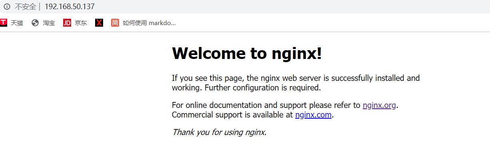
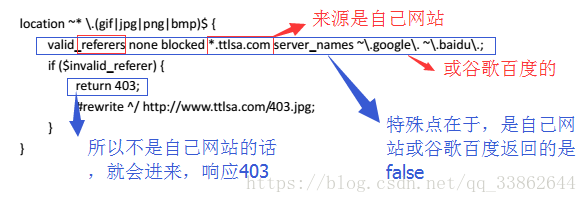

Nginx优缺点
Nginx是轻量级、高性能，低消耗的Web反向代理服务器。
- 优点:
1.低内存消耗：nginx由C编写，同样的web服务器，占用的资源和内存低，性能高。一般情况下，10000个非活跃的HTTP Keep-Alive连接在Nginx中仅消耗2.5MB的内存，这是Nginx支持高并发连接的基础。
2.nginx支持高并发，当启动nginx服务器，会生成一个master进程，master进程会fork出多个worker进程，由worker线程处理客户端的请求。每个worker子进程是独立平等的，当有客户端请求时，worker进程公平竞争，抢到的worker进程会把请求提交给后端服务器，当后端服务器没有及时响应时，此worker进程会继续接收下一个request,当上一个请求有响应后会触发事件，此worker进程继续之前的执行，知道响应结束。一个request不会被两个worker进程执行。
3.nginx是异步非阻塞型处理请求（第三点印证），采用的epollandqueue模式，apache是阻塞型处理请求。
4.nginx支持反向代理（用户有感知的访问叫正向代理如使用vpn访问youtube，用户无感知访问叫反向代理如负载均衡），支持6种负载均衡策略）。
5.nginx处理静态文件速度快，用于将系统资源动静分离。（原因：通过socket发送一个文件流程大概如下：①打开文件 ②把文件数据读到内存 ③把内存里的数据写到socket，而nginx通过open_file_cache可以减少重复打开文件，然后通过sendfile系统调用减少内核空间和用户空间间的内存复制，直接把文件内存写到socket，通过这些就能对单次返送进行优化。）
6.nginx高度模块化，配置简单，高扩展性：完全由多个不同功能、不同层次、不同类型且耦合度极低的模块组成，当对某一模块修复bug或者升级时，可以专注于模块自身。Nginx的模块都是嵌入到二级制文件中执行的，这使得第三方模块一样具备极其优秀的性能。
7.热部署：master管理进程与worker工作进程的分离设计，使得Nginx能够提供热部署功能，可以在7*24小时不间断服务的前提下，升级Nginx的可执行文件，也支持不停止服务就更新配置项、更换日志文件等功能。
8.最自由的BSD许可协议：BSD许可协议不只是允许用户免费使用Nginx，它还允许用户在自己的项目中直接使用或修改Nginx源码，然后发布。
最核心的优点：能在支持高并发请求的同时保持高效的服务。
缺点：对比apache不稳定，由于是单进程多线程，进程死掉会影响很多用户。
Apache服务器
Apache有很多优点，如稳定开源，跨平台等，但是不支持高并发，如果有数以万计的并发http请求同时访问，就会导致服务器上消耗大量内存，操作系统内核对成百上千的Apache进程做进程间切换也会消耗大量CPU资源，并导致http请求的平均响应速度降低，这些都决定了Apache不可能成为高性能web服务器。
Nginx环境搭建
Nginx安装前准备
安装ngix之前需要Linux安装几个相关库，否则配置编译会出错，这几个库分别是：
1 | gcc ---编译器，将nginx的c++代码编译成程序可执行的文件 |
一键装
1 | [root@nginx1 /]#yum install gcc openssl openssl-devel pcre pcre-devel zlib zlib-devel -y |
安装Nginx
相关库安装好后，安装nginx。nginx官方下载地址： http://nginx.org/download
1 | 先安装wget库 |
1 | [root@nginx1 /]#yum install wget |
执行安装完成后，在/usr/local路径下会生成nginx文件夹
启动Nginx
启动nginx的三种方式：
1 | [root@nginx1 sbin]#./nginx （普通启动） |
Nginx的关闭和重新加载配置
一旦启动nginx，就可以通过使用-s参数调用可执行文件来对其进行控制。使用以下语法：./nginx -s 信号
其中信号可能是以下之一：
stop —快速关机，正在请求访问的连接会中断
quit —正常关机,优雅关闭，正在请求访问的连接不会受影响
reload —重新加载配置文件，正在在请求访问的连接不会受影响
reopen —重新打开日志文件
1 | [root@nginx1 sbin]./nginx -s stop (快速关闭) |
配置检查
当修改nginx配置文件后，可以使用以下nginx命令进行配置文件语法检查，用于检查nginx配置文件是否正确。
- [root@nginx1 /]#
/usr/local/nginx/sbin/nginx -c /usr/local/nginx/conf/nginx.conf -t
或 - [root@nginx1 sbin]#
./nginx -t
执行结果如下则说明配置文件件正确：nginx: the configuration file /usr/local/nginx/conf/nginx.conf syntax is ok
nginx: configuration file /usr/local/nginx/conf/nginx.conf test is successful
查看nginx版本
查看nginx版本的方法有两种
1 | [root@nginx1 /]#./nginx -v （字母v小写，只查看版本） |
查看帮助信息
- [root@nginx1 sbin]#
./nginx -h
防火墙配置
centos6环境下：1
2
3[root@hadoop1 /]# /sbin/iptables -I INPUT -p tcp --dport 80 -j ACCEPT （开放本机80端口，nginx默认使用了80端口）
[root@hadoop1 /]# /etc/init.d/iptables save （保存规则）
[root@hadoop1 /]# /etc/init.d/iptables restart （重启Iptables服务）访问Nginx
使用linux的IP地址的80端口访问Nginx主页

Nginx配置文件nginx.conf
nginx及其模块的工作方式在配置文件中确定。默认情况下，该配置文件被命名nginx.conf，
并放入目录 /usr/local/nginx/conf， /etc/nginx或/usr/local/etc/nginx。
nginx.conf由多个块组成，最外面的块是main，main包含一些基本配置、events和http，http包含upstream和多个server，server又包含多个location：这四者之间的关系式：server继承main，location继承server，upstream既不会继承其他设置也不会被继承。1
2
3
4
5main（全局设置）、server（主机设置）、upstream（负载均衡服务器设置）和 location（URL匹配特定位置的设置）。
main块设置的指令将影响其他所有设置；
server块的指令主要用于指定主机和端口；
upstream指令主要用于负载均衡，设置一系列的后端服务器；
location块用于匹配网页位置。
在这四个部分当中，每个部分都包含若干指令，这些指令主要包含Nginx的主模块指令、事件模块指令、HTTP核心模块指令，同时每个部分还可以使用其他HTTP模块指令，例如Http SSL模块、HttpGzip Static模块和Http Addition模块等。
全局基本配置
1 | #user nobody; #配置worker进程运行的用户，这里即使注释了默认配置也是nobody运行worker进程 |
Events配置
配置工作模式和连接数
1 | events { |
Http配置
- http配置可分为3个部分：
http {
基本配置
upstream
多个server
}
http基本配置
1 | include mime.types; #配置nginx支持哪些多媒体类型静态文件，可以在conf/mime.types文件查看支持哪些多媒体类型 |
server虚拟主机配置
htt中可配置多个server，每个server相当于一个虚拟主机vhost，index用于设定访问的默认首页地址，root指令用于指定虚拟主机的网页根目录，这个目录可以是相对路径，也可以是绝对路径。
1 | server { |
文件及目录匹配判断
1 | server{ |
1 | 判断变量和字符串是否相等使用'='或者'!='; |
laocation URL匹配配置
URL地址匹配是进行Nginx配置中最灵活的部分。 location支持正则表达式匹配，也支持条件判断匹配，用户可以通过location指令实现Nginx对动、静态网页进行过滤处理。使用location URL匹配配置还可以实现反向代理，用于实现PHP动态解析或者负载负载均衡。
语法详解
语法规则： location [=|~|~*|^~] /uri/ { … }
1 | = 开头表示精确匹配 |
首先精确匹配 =，其次以xx开头匹配^~，然后是按文件中顺序的正则匹配，最后是交给 / 通用匹配。
当有匹配成功时候，停止匹配，按当前匹配规则处理请求。
- 例子，有如下匹配规则：
1
2
3
4
5
6
7
8
9
10
11
12
13
14
15
16
17
18
19
20
21
22
23
24location = / {
#规则A
}
location = /login {
#规则B
}
location ^~ /static/ {
#规则C
}
location ~ .\*\\.(gif|jpg|png|js|css)$ {
#规则D，注意：是根据括号内的大小写进行匹配。括号内全是小写，只匹配小写
}
location \~* \\.PNG$ {
#规则E
}
location !\~ \\.xhtml$ {
#规则F
}
location !~* \\.xhtml$ {
#规则G
}
location / {
#规则H
}
那么产生的效果如下：
访问根目录/， 比如
http://localhost/将匹配规则A。
访问http://localhost/login将匹配规则B，http://localhost/register则匹配规则H。
访问http://localhost/static/a.html将匹配规则C。
访问http://localhost/b.jpg将匹配规则D和规则E，但是规则D顺序优先，规则E不起作用，
而http://localhost/static/c.png则优先匹配到 规则C。
访问http://localhost/a.PNG则匹配规则E， 而不会匹配规则D，因为规则E不区分大小写。
访问http://localhost/a.xhtml不会匹配规则F和规则G。
访问http://localhost/a.XHTML不会匹配规则G，（因为!和*）。匹配规则F，规则G属于排除法。
访问http://localhost/xxxx/xxx则最终匹配到规则H，因为以上规则都不匹配。
匹配成功后，nginx转发请求给后端应用服务器，比如FastCGI（php），tomcat（jsp），nginx作为方向代理服务器存在。
以下这段设置是通过location指令来对网页URL进行分析处理，所有扩展名以.gif、.jpg、.jpeg、.png、.bmp、.swf结尾的静态文件都交给nginx处理：
1
2
3
4location ~ .*\\.(gif|jpg|png)$ {
root /static/img; # 请求http://nginx服务器Ip:端口号/xxx.jpg 将被映射到实际目录文件:nginxnginx安装路径/static/img
expires 30d; #指定静态文件的过期时间，这里是30天
}以下这段设置是将html和css下的所有文件都交给nginx来处理，当然，html和css目录包含在
/web/static目录中。1
2
3
4
5location ~ ^/(html|css)/ {
root static
#比如：`nginx服务器Ip:端口号/html/*`请求就会去ngin`nginx安装路径/static/html/`这个目录下去找*,*可以是文件也可以是html子目录下的文件。
expires 30d;
}
实际使用中，个人觉得至少有三个必选匹配规则定义，如下：
第一个必选规则：直接匹配网站根，通过域名访问网站首页比较频繁，使用这个会加速处理，官网如是说。
1
2
3
4
5
6
7
8location = / {
proxy_pass http://`tomcat:8080/index` #这里是直接转发给后端应用服务器了，也可以是一个静态首页
}
或者
location = / {
root static;
index index.html index.html;
}第二个必选规则：处理静态文件请求，这是nginx作为http服务器的强项是处理静态文件请求，这是nginx作为http服务器的强项，有两种配置模式，目录匹配或后缀匹配,任选其一或搭配使用
1
2
3
4
5
6
7location ^~ /js/ {
root static; #以xx开头，比如：`nginx服务器Ip:端口号/js/xx.js`请求就会去ngin`x安装路径/static/js/`这个目录下去找xx.js
}
location ~* \.(gif|jpg|jpeg|png|css|js|ico)$ {
root static/img; #以xx结尾，比如：`nginx服务器Ip:端口号/xx.jpg`请求就会去ngin`x安装路径/static/img/`这个目录下去找xx.jpg
}第三个必选规则:
通用规则，用来转发动态请求到后端应用服务器,非静态文件请求就默认是动态请求1
2
3location / {
proxy_pass http://`upstream_name`;
}
匹配系统首页
1 | location = /{ |
反向代理
1 | location =/(html|css)/ { |
Redirect
应用场景：
- 调整用户浏览的URL，看起来规范
- 为了让搜索引擎收录网站内容，让用户体验更好
- 网站更换新域名后
- 根据特殊的变量、目录、客户端信息进行跳转
1
2
3
4
5
6
7
8
9server {
listen 80;
server_name test.com;
index index.html index.html;
root static;
if ($http_host !~ "^star\.igrow\.cn$" {
rewrite ^(.*) http://www.baidui.com break; #域名跳转,访问test.com跳转www.baidui.com
}
}
防盗链
1 | location ~* \.(gif|jpg|png|bmp)$ { |

根据文件类型设置过期时间
1 | location ~* \.(js|css|jpg|jpeg|gif|png|swf)$ { |
设置图片过期时间
1 | location ~ \.(jpg|jpeg|gif|png|bmp|ico)$ { |
禁止访问某个目录
1 | location ~* \.(txt|doc)${ |
配置https
1.去阿里云/腾讯云申请免费的
2.下载证书
3.证书放到/usr/local/nginx目录下（就是和conf同级，nginx.conf默认的配置文件的上一级）
4.在vhost目录下加入配置文件
1 | server { |
动静分离
静态资源如：html、css、js等存放在nginx服务器上，动态资源如：jsp放在tomcat服务器上
1 | server { |
Upstream
pstream是Nginx的HTTP Upstream模块，这个模块通过一个简单的调度算法来实现客户端IP到后端服务器的负载均衡。
在上面的设定中，通过upstream指令指定了一个负载均衡器的名称upstream.name，这个名称可以任意指定，在后面需要的地方直接调用即可，名称需与location中的代理转发的链接（除去http://）一致。
负载均衡策略
Nginx共有6种负载均衡策略:
1 | 轮询 （默认，nginx自带） |
轮询
最基本的配置方法，它是upstream模块默认的负载均衡默认策略。每个请求会按时间顺序逐一分配到不同的后端服务器。
1 | upstream upstream_name{ |
- 可用参数：
1
2
3
4
5
6
7
8down -----------标记服务器永久停机了,不参与负载均衡。
fail_timeout ---设置连接探测时间周期，默认10s，与max_fails结合使用
backup ---------标记该服务器为备用服务器。当其他所有的非backup机器出现故障或者忙的时候，
才会请求backup机器。backup机器压力最小，利用该特性可实现集群热部署。
max_fails ------设置在fail_timeout参数设置的时间内最大失败次数，默认值为1。与max_fails结合使用，
如果服务节点在这个周期内，失败次数超过了设定值时，那么该节点将会被标记为不可用，
同一个周期内不再参与负载均衡；并等待下一个周期再一次去请求，判断是否连接是否成功。
如果成功，将恢复之前的轮询方式，如果不可用将在下一个周期(fail_timeout)再试一次。注意： - 在轮询中，如果服务器宕机，故障系统被自动剔除，使用户访问不受影响；
- 缺省配置就是轮询策略。
- 此策略适合服务器配置相当，无状态且短平快的服务使用。
weight
weight=n，n值越大权重越大，服务器被访问到的机率越高，成正比关系
1 | upstaream upstream_name{ |
注意：
- 此策略适主要用于后端每个服务器性能不均的情况下
- 如果服务器权重相等，则轮询
ip_hash
ip_hash也叫ip绑定,每个请求按访问IP的hash结果(ip.hash%集群机器数量)分配，这样可以实现来自同一个IP的访客固定访问一个后端服务器
1 | upstaream upstream_name{ |
注意：
- 此策略适有效解决了集群服务session丢失的问题
least_conn
最少链接策略,哪台服务器连接数最少连哪台，使得每台服务器的连接数都比较均衡。
我们知道轮询算法是把请求平均的转发给各个后端，使它们的负载大致相同。
这有个前提，就是每个请求所占用的后端时间要差不多，如果有些请求占用的时间很长，会导致其所在的后端
负载较高。在这种场景下，把请求转发给连接数较少的后端，能够达到更好的负载均衡效果，这就是least_conn算法。
1 | upstaream upstream_name{ |
注意：
- 此策略适合服务器配置相当，某些请求占用的时间过长的场景
- 实际上，最少链接策略会选择conn/weight（活越连接数/权重）值最小的作为下一个处理请求的server，只是在未配权重的情况下，个服务器权重相等，则此因素不需要考虑在内。
- 如下，假设9100端口活跃连接数为5，9200端口活跃连接数为3，
5/2 < 2/1下个处理请求的server为9100端口。1
2
3
4
5upstaream upstream_name{
least_conn;
server localhost:9100 weight=2;
server localhost:9200; weight=1；
}
fair
实现响应时间短的server优先分配
1 | upstaream upstream_name{ |
url_hash
实现每个url定向到同一个后端服务器,原理和ip_hash一样：根据（url.hash % 集群数量 ）确定负载均衡到哪台服务器
1 | upstream upstream_name { |
Keepalived + Nginx 实现高可用
主备模式或者双主模式
参考链接：https://blog.csdn.net/l1028386804/article/details/72801492，https://blog.csdn.net/u012599988/article/details/82152224
最后更新： 2020年04月24日 17:02